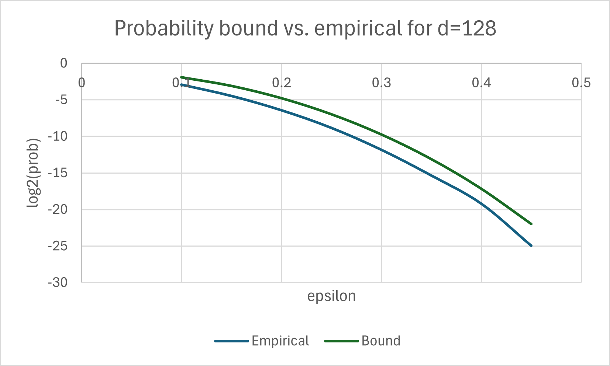

The fetch-by-similarity workload implements a k-nearest-neighbor (kNN) vector-search functionality. The dataset is a key-value store with unit-length vectors as keys and arbitrary (short) bit-strings as payload values. The queries are also unit-length vectors, and the goal is to fetch a small number of payload values, corresponding to keys that are close to the query in terms of Cosine similarity.
In more detail, denote the number of records in the dataset by N. Each record i ∈ [N] is of the form (ki, pldi), with ki ∈ Rd a real vector normalized to ℓ2-norm of 1, and pldi ∈ {0,1}m. A query q ∈ Rd is likewise normalized to ℓ2-norm of 1. The workload comes with a "promise" that there exist at most t=32 vectors ki in the dataset with better than 0.8 Cosine-similarity to the query, and all other vectors are much less similar. (See below for how this promise is implemented.) Specifically, there are at most t indexes i such that q · ki > 0.8, and for all other records q · ki < 0.8 (where `·' denotes the dot product). Below we say that a vector ki is similar to the query q if q · ki> 0.8, and denote
SIM(q) = { i ∈ [N] : q · ki > 0.8 }.
The workload includes two interfaces that benchmark submitters must implement:
The workload also specifies three different instance sizes, namely (N,d,m) tuples. The specification uses m=84 for the payload-size in all three instance sizes (but that setting is rather arbitrary, it just happens to be the bitlength supported by our reference code). It uses the following pairs of number-of-records N and dimension d:
Submission to the benchmarking suite must set the implementation parameters so as to achieve security level of at least 128 bits (against a semi-honest server). Submitters must document their choice of parameters and explain why they believe that it meets the 128-bit security mandate. (For example, for LWE-based schemes without a sparse key, they can rely on Table 5.2 or Table 5.3 in the HE-security-guidelines document of Bossuat et al. [BCC+24].)
The fetch-by-similarity harness contains a script that can be called to run the implementation of submitters, that script accepts command-line arguments to specify which interface of what instance size to run.
$ python3 harness/run_submission.py -h
usage: run_submission.py [-h] [--num_runs NUM_RUNS] [--seed SEED] [--count_only] [--remote]
{0,1,2,3}
Run the fetch-by-similarity FHE benchmark.
positional arguments:
{0,1,2,3} Instance size (0-toy/1-small/2-medium/3-large)
options:
-h, --help show this help message and exit
--num_runs NUM_RUNS Number of times to run steps 4-9 (default: 1)
--seed SEED Random seed for dataset and query generation
--count_only Only count # of matches, do not return payloads
--remote Run example submission in remote backend mode
The fetch-by-similarity workload harness generates a synthetic dataset and queries at random, so that they meet the promise above with overwhelming probability. It begins by choosing a set of c = N/32 "centers", uniformly at random and independently on the dimension-d unit sphere (so with high probability they are nearly orthogonal to each other, see the analysis below). Denoting the resulting set of centers by (c1,...,cc), each one of the keys ki, as well as the query vector q, is sampled using the Sample-point procedure below.
Algorithm 1 The sampling procedure, returns either a random point or near one of the centers.
procedure Sample-point(c1,...,cc): # The cj's were chosen at random on the unit sphere
That procedure outputs an independent point on the unit sphere with probability 50%, and otherwise it samples a point near a randomly-chosen center cj. Hence the dataset ends up having c clusters, each with expected size of 16 points, and N/2 other keys that are not in any of the clusters.
Similarly, with probability 50% the query is near one of the centers (so is expected to have around 16 matches), and otherwise it is another random point on the unit sphere (and hence expected to have no matches at all).
Below we show that points that are sampled near the same center are likely to have similarity of more than 0.9, while points that are not sampled near the same center are very unlikely to have similarity more than 0.7.
We start with an upper bound on the similarity between two uniform random points on the unit sphere. It is easy to see that the expected value of the inner product is O(1/), reflecting the fact that two random unit vectors in high dimension are nearly orthogonal to each other. For a high-probability bound, we use the theorem below (whose proof can be found on StackExchange [Leu22]):
Theorem: Fix any y on the sphere Sd-1= { x ∈ Rd: |x|2=1 }. Let z be a random variable, uniformly distributed on Sd-1. Then for any ε ∈ (0,1/), it holds that Pr[|yTz|>ε] ≤ (1-ε2)d/2.
By symmetry, the probability Pr[yTz>ε] (without the absolute value) is half of the expression above. Substituting ε=0.7 and setting d=128 (for the smallest instance), we get Pr[yTz > 0.7] ≤ (1-0.72)64 / 2 < 2-63.
Below we plot the bound above against empirical results for ε ∈ [0.1,0.45], which we obtained by measuring the inner product of about 4e+9 random points in dimension d=128. Similar calculations for the medium (d=256) and large (d=512) instances yield bounds below 2-125 and 2-249, respectively.

The bounds from Theorem 1 vs. empirical results for dimension d=128.
Fixing an arbitrary unit-length center point c, we recall that points that are chosen near that center point have the form vi=(c+ri)/ℓi, where ri is a random point of length 0.3 and ℓi=|c+ri|. Since ri is a random point on the 0.3-radius sphere, then it is nearly orthogonal to c, and therefore ℓi=|c+ri| ≈ (12 + 0.32)1/2 = ≈ 1.044. For two such points v1, v2, the corresponding ri's are also nearly orthogonal to each other, hence
v1 · v2 = (c+r1)ℓ1 · (c+r2)ℓ2 = (1/ℓ1ℓ2) · (|c|2+ r1·c+c·r2+r1·r2) ≈ 1/1.0442 · 1 ≈ 0.917
Indeed, experimental results confirm the above, with 1000 samples we observed an average similarity of 0.9163 and minimum similarity of 0.8945.
[BCC+24] Security guidelines for implementing homomorphic encryption. Jean-Philippe Bossuat, Rosario Cammarota, Ilaria Chillotti, Benjamin R. Curtis, Wei Dai, Huijing Gong, Erin Hales, Duhyeong Kim, Bryan Kumara, Changmin Lee, Xianhui Lu, Carsten Maple, Alberto Pedrouzo-Ulloa, Rachel Player, Yuriy Polyakov, Luis Antonio Ruiz Lopez, Yongsoo Song, and Donggeon Yhee. IACR Communications in Cryptology, 1(4):26, 2024.
[Lue22]
Concentration of measure on sphere: Bounding the probability of a large angle.
C. Leuridan.
https://math.stackexchange.com/questions/4560617/
(version 2022-10-27).
Based on an exercise in chapter 3 of High-Dimensional Statistics: A Non-Asymptotic Viewpoint
by Martin J. Wainwright, Cambridge University Press, 2019.